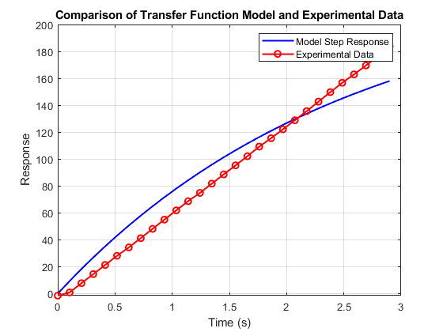

% Time vector times = linspace(0, 2.9, 29); % Experimental data x_values = [ ... 173.5; 175.875; 182.75; 189.5; 196.3125; 203.125; 209.375; 216.1875; 223.125; ... 230.0; 236.875; 243.6875; 249.875; 256.75; 263.625; 270.3125; 277.125; 284.25; ... 290.5; 297.125; 303.8125; 310.625; 317.6875; 324.75; 331.6875; 337.9375; 344.5625; ... 351.3125; 358.6875 ... ]; x_values_actual=x_values-175
x_values_actual =
-1.5000
0.8750
7.7500
14.5000
21.3125
28.1250
34.3750
41.1875
48.1250
55.0000
61.8750
68.6875
74.8750
81.7500
88.6250
95.3125
102.1250
109.2500
115.5000
122.1250
128.8125
135.6250
142.6875
149.7500
156.6875
162.9375
169.5625
176.3125
183.6875
Define the transfer function
s = zpk('s'); Gsys_yaw_position = 92.07 / (s + 0.4); % Simulate the step response of the transfer function [y_sim, t_sim] = step(Gsys_yaw_position, times); % Plot the transfer function step response figure(2); plot(t_sim, y_sim, 'b-', 'LineWidth', 1.5); hold on; % Plot the experimental data plot(times, x_values_actual, 'ro-', 'LineWidth', 1.5); % Add labels and legend title('Comparison of Transfer Function Model and Experimental Data'); xlabel('Time (s)'); ylabel('Response'); legend('Model Step Response', 'Experimental Data'); grid on; hold off;